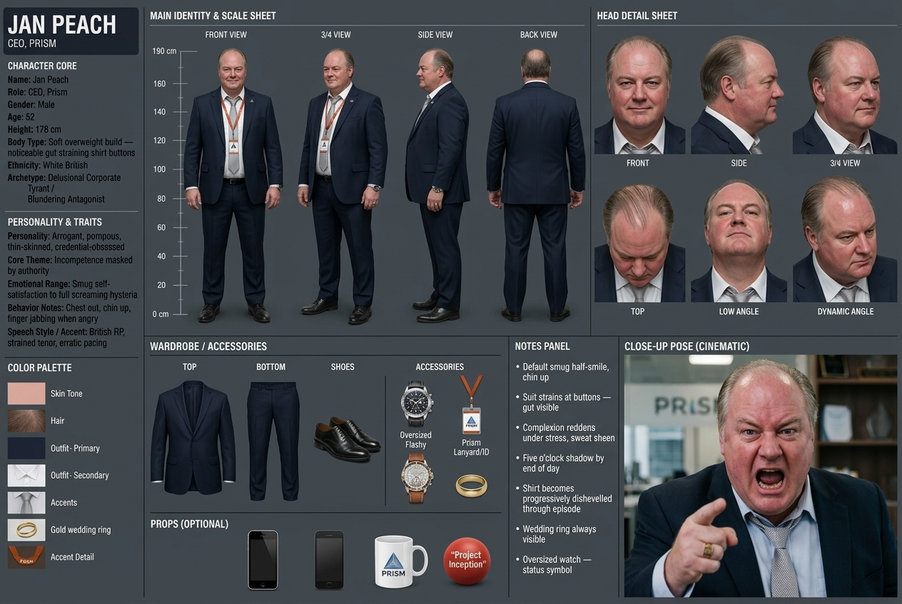
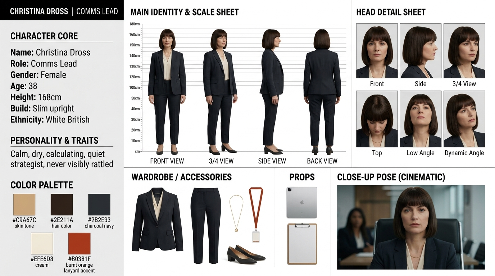
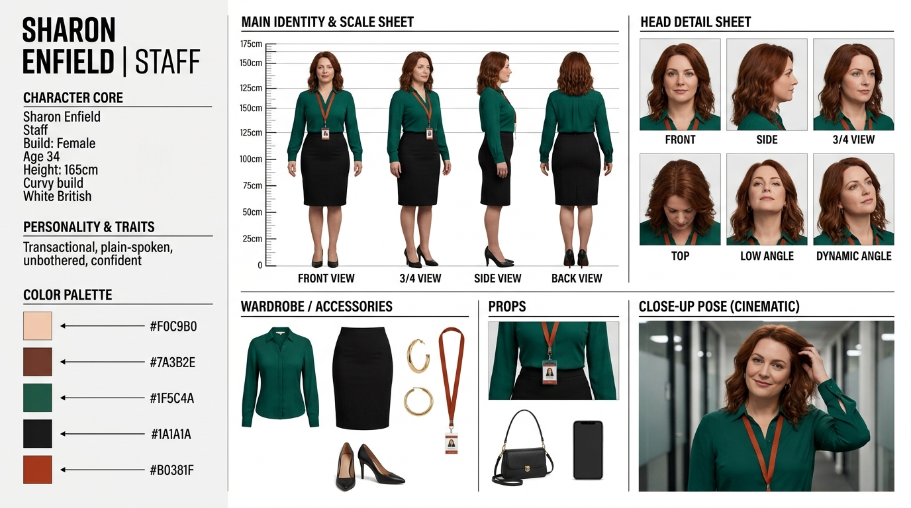

Production Dashboard
Complete pre-visualization, screenplay, character turnarounds, and location specs for "Circle the Square".
Jan Peach, Christina Dross, Sharon Enfield, Chris, Rick. 10 Master Spec Sheets rendered.
Locations 01 & 02 rendered; Locations 03–09 pre-coded in 5:21 PM batch queue.
Complete 35mm framing, lens focal lengths, camera movement & lighting specs.
Following a string of failed corporate initiatives at Prism HQ, arrogant CEO Jan Peach launches a desperate rebranding exercise named "Project Inception". While Comms Lead Christina Dross introduces high-sugar pastries to pacify staff, Jan's illicit office affair with Sharon Enfield is exposed, and his announcement of a £50k salary increase sparks workplace mutiny. The episode culminates in a chaotic canteen meltdown, furniture destruction, and a swift Taser de-escalation by Rick.
Master Character Identity Sheets
Complete multi-panel turnaround and production spec sheets for all main cast members.

LOCAL QWEN3-TTS GPU VOICE (ComfyUI Engine - Older Voice):
HUMAN NEURAL VOICE SAMPLE (Older British RP Executive - 52+ Yrs):
Full Path: C:\kontitemp\ai\circle_the_square\character-refs\jan_peach_identity_sheet.jpg

LOCAL QWEN3-TTS GPU VOICE (VoiceDesign Engine - British RP Female):
HUMAN NEURAL VOICE SAMPLE (British Corporate Crisp RP):
Full Path: C:\kontitemp\ai\circle_the_square\character-refs\christina_dross_identity_sheet.jpg

LOCAL QWEN3-TTS GPU VOICE (VoiceDesign Engine - Welsh Female):
HUMAN NEURAL VOICE SAMPLE (Adult Female Welsh Accent):
Full Path: C:\kontitemp\ai\circle_the_square\character-refs\sharon_enfield_identity_sheet.jpg

LOCAL QWEN3-TTS GPU VOICE (ComfyUI Engine):
HUMAN NEURAL VOICE SAMPLE (British Sarcastic Baritone):
Full Path: C:\kontitemp\ai\circle_the_square\character-refs\chris_identity_sheet.jpg

LOCAL QWEN3-TTS GPU VOICE (ComfyUI Engine):
HUMAN NEURAL VOICE SAMPLE (British Deep Monotone):
Full Path: C:\kontitemp\ai\circle_the_square\character-refs\rick_identity_sheet.jpg
Master Location & Set Spec Sheets
Architectural turnaround sheets, material swatches, and lighting grids for Prism HQ.

Full Path: C:\kontitemp\ai\circle_the_square\location-refs\exterior_forecourt_location_sheet.jpg

Full Path: C:\kontitemp\ai\circle_the_square\location-refs\reception_atrium_location_sheet.jpg
Industry Screenplay (Fountain Format)
Complete script text for featurette episode "Project Inception".
Director's Shot List & Staging
Complete 34-shot pre-visualization table for Scenes 1 through 4.
| Shot # | Scene & Set | Framing & Lens | Movement | Subject & Action | Audio Cue |
|---|---|---|---|---|---|
| S01-01 | Scene 1 (Jan's Office) | 24mm Wide Master | Static locked-off | Fishbowl view into glass meeting room. Jan pacing, Christina seated with tablet. | Low office hum |
| S01-02 | Scene 1 (Jan's Office) | 50mm OTS Jan | Slow creep-in | Jan sitting back arrogantly with arms spread on white desk. | Jan: "dealing with these morons..." |
| S01-06 | Scene 1 (Jan's Office) | 50mm Medium Jan | Rapid push-in | Jan stands up abruptly pointing index finger at ceiling in Picard pose. | Jan: "Great. Make it so." |
| S01-09 | Scene 1 (Jan's Office) | 100mm Macro Close-Up | Rapid zoom-in | Jan red-faced, sweating, screaming at maximum volume. | Jan: "GET OUT NOW YOU STUPID COW!" |
| S02-03 | Scene 2 (Jan's Office) | 35mm Low-Angle Insert | Downward tilt | Jan's open shirt reveals chest hair shaved in a giant arrow pointing down. | 3-second total silence |
| S03-08 | Scene 3 (Open Floor) | 50mm Merch Insert | Tilt down | Jan holds up a burnt orange "Project Inception" stress ball over cardboard box. | Jan: "1,000 stress balls..." |
| S04-08 | Scene 4 (Canteen) | 35mm Action Stunt | Tracking follow | Jan hurls heavy meeting chair through glass window, shattering it outward. | Loud glass explosion smash |
| S04-09 | Scene 4 (Canteen) | 50mm Medium Two-Shot | Static | Rick tasers Jan; Jan slumps face-first onto tile floor unconscious. | POP-CRACKLE electric zap sound |
Scene Transitions & Editorial Map
Visual match-cuts, L/J audio bridges, and location continuity.
Panel-by-Panel Storyboard Prompt Engine
Pre-coded photorealistic 35mm film-still prompts for all 34 camera panels.
High-resolution 35mm film-still, 24mm wide angle shot looking into Location #5 Glass Meeting Room from the open-plan office corridor. Full-height glass partition wall with white frosted dot privacy film pattern. Inside, Jan Peach (52, soft 5'10" build, double chin, comb-over greying at temples, tight dark navy suit, Prism navy lanyard with burnt orange badge holder #B0381F) paces behind a white meeting table #F4F3EF. Christina Dross (38, slim 5'6" build, dark bob with blunt fringe, charcoal blazer, cream blouse) sits upright with a tablet. Daylight streaming through windows, natural corporate lighting, British workplace comedy --ar 16:9
High-resolution 35mm film-still, 50mm medium two-shot showing Jan Peach slumping face-first to Location #3 floor unconscious while Rick (40, grey polo, broad build) stands planted 4 feet behind him holding a yellow prop Taser calmly --ar 16:9
Sound Design & Foley Cue Sheet
Complete 22 sound, music, and foley cues — Delegated to Native Video AI Audio Generation (Veo / Sora).
Sound effects, foley impacts, room tone, and glass smashes are rendered natively by the video generation model during clip synthesis (e.g. Google Veo 2 / Sora video-with-audio prompts). Character dialogue is dubbed using the locked local Qwen3-TTS voices.
| Cue # | Scene & Set | Category | Trigger & Description | Video AI Audio Prompt Specification |
|---|---|---|---|---|
| [SFX-01] | Scene 1 (Jan's Office) | Foley | Jan sits back in task chair | Desk chair swivel metal creak sound |
| [SFX-02] | Scene 1 (Jan's Office) | Foley | Christina swipes presentation tablet | Glass screen tap & subtle swipe rustle |
| [SFX-03] | Scene 1 (Jan's Office) | Music Cut | Jan shouts "GET OUT NOW YOU STUPID COW!" | Music bed cuts out dead into total silence |
| [SFX-04] | Scene 1 (Jan's Office) | SFX | Christina closes glass meeting room door | Glass door soft hydraulic CLICK |
| [SFX-05] | Scene 2 (Jan's Office) | Foley | Jan unbuttons shirt mid-chest | Heavy audible panting & shirt fabric rustle |
| [SFX-06] | Scene 2 (Jan's Office) | SFX | Sharon barges in without knocking | Abrupt glass door swinging open burst |
| [SFX-07] | Scene 2 (Jan's Office) | Music Sting | Tilt down to Jan's shaved chest hair arrow | Low comedic baritone brass sting note |
| [SFX-08] | Scene 2 (Jan's Office) | Foley / SFX | Jan snaps pull-cord to lower window blinds | Metallic window blinds SNAP-RATTLE |
| [SFX-09] | Scene 2 (Jan's Office) | SFX | Glass office door locks | Heavy deadbolt door lock click (cl-CLACK) |
| [SFX-10] | Scene 3 (Open Floor) | Foley | Jan gathers crowd in desking aisle | Double handclap (CLAP-CLAP) |
| [SFX-11] | Scene 3 (Open Floor) | Ambience | Chris asks if Sharon gets a pass | Quiet sniggering & murmuring ripple |
| [SFX-12] | Scene 3 (Open Floor) | Foley | Jan holds up orange Project Inception merch | Stress ball foam squeeze squeak |
| [SFX-13] | Scene 3 (Open Floor) | Crowd Reaction | Jan announces £50k salary increase | Collective audible groan from 20 workers |
| [SFX-14] | Scene 3 (Open Floor) | Foley | Jan shouts "GET BACK TO WORK!" | Scuffle of 20 task chairs rolling back |
| [SFX-15] | Scene 4 (Canteen) | Foley | Canteen worker says "Sorry, all gone" | Empty stainless steel pastry tray metal scrape |
| [SFX-16] | Scene 4 (Canteen) | Stunt SFX | Jan sweeps plates off counter to floor | CRASH-SHATTER! Explosive plate smash sound |
| [SFX-17] | Scene 4 (Canteen) | Audio Cut | 20 canteen diners freeze in shock | Total room audio mute (dead room silence) |
| [SFX-18] | Scene 4 (Canteen) | Stunt SFX | Jan hurls heavy chair through glass window | LOUD GLASS EXPLOSION SMASH SOUND |
| [SFX-19] | Scene 4 (Canteen) | Stunt SFX | Rick fires prop Taser into Jan's back | POP-CRACKLE-ZAP! High-voltage electrical arc discharge |
| [SFX-20] | Scene 4 (Canteen) | Foley | Jan slumps face-first to tile floor | Heavy deadweight body thud on tile floor |
| [SFX-21] | Scene 4 (Canteen) | Foley | Rick stows Taser after de-escalation | Taser slide back into leather holster clip |
| [SFX-22] | Scene 4 (Canteen) | Music / Ambience | Closing overhead crane & fade to black | Police siren wail fading in over end credits |
Costume & Prop Master Inventory
Prism lanyards, Project Inception merch, Rick's Taser, and stunt props.
Lanyard Strap: 15mm navy blue strap (#16294A) printed with white "Prism" wordmark repeating.
Badge Holder: Burnt orange rigid plastic card holder (#B0381F).
ID Card: Photo ID card with barcode, NFC chip graphic, and "PRISM HQ — ACCESS LEVEL 2". Worn by all main cast members.
Stress Balls: 100 burnt orange foam units printed with "PROJECT INCEPTION — PRISM".
Pens & Notebooks: Matte black ballpoint pens with orange clips + A5 grid notebooks.
Shipping Box: Cardboard box labeled SHIP TO: JAN PEACH (CEO) - 1000 X MERCH SET.
Device: 1:1 scale yellow/black tactical prop Taser unit with blue LED armed light.
VFX Overlay: 2-frame digital electrical arc spark overlay between Taser contacts and Jan's back.
Breakaway Plates: 10 plaster breakaway plates for the counter sweep.
Breakaway Window: 4ft x 6ft breakaway sugar-glass window pane + lightweight meeting chair.
5:21 PM Batch Execution Queue
Paced batch schedule for rendering Locations 03 through 09.
• Location 03: Staff Restaurant / Canteen
• Location 04: Open-Plan Office Floor
• Location 05: Glass Meeting Room ("Jan's Office")
• Location 06: Breakout & Kitchenette Nooks
• Location 07: Landscaped Podium Courtyard
• Location 08: Corridors, Locker Bays & Washrooms
• Location 09: Rear / Staff-Only Entrance
ComfyUI Qwen3-TTS Node & Instruct Setup
Preset mappings & structured `instruct` templates for Voice Design and Voice Instruct nodes inside ComfyUI.
• Custom Voice Node: Pick 1 of 9 built-in speakers (Aiden, Dylan, Eric, Ono_Anna, Ryan, Serena, Sohee, Uncle_Fu, Vivian).
• Voice Design Node: Describe new voice in free-text instruct input.
• Voice Instruct Node: Wire before CustomVoice or VoiceDesign node. Pick Character Preset (14 options) + Style Preset (40 options).
pitch: High, sharp, strained tenor.
speed: Fast, erratic, anxious.
emotion: Hysterical, pompous, angry.
personality: Arrogant, thin-skinned corporate tyrant.
accent: British Received Pronunciation (RP).
gender: Female.
age: 38 years old adult female.
pitch: Feminine alto voice.
speed: Measured, unhurried, steady.
emotion: Cold, deadpan, calm female speaker.
personality: Sharp female corporate strategist.
accent: Clear British London RP female.
pitch: Warm, confident, grounded adult female.
speed: Casual, relaxed.
emotion: Unbothered, amused, transactional.
personality: Self-assured opportunist.
accent: Scottish (West Coast / Edinburgh).
gender: Male.
age: 32 years old young adult male.
pitch: Conversational British baritone voice.
speed: Quick-witted, casual, sharp pacing.
emotion: Sarcastic, deadpan, amused male speaker.
personality: Office smart-mouth and comic relief.
accent: Dry South London Estuary British accent.
pitch: Deep, gravelly bass-baritone.
speed: Slow, deliberate monotone.
emotion: Flat, unhurried.
personality: Blunt realist, unblinking Taser operator.
accent: Flat Midlands / East Anglian.